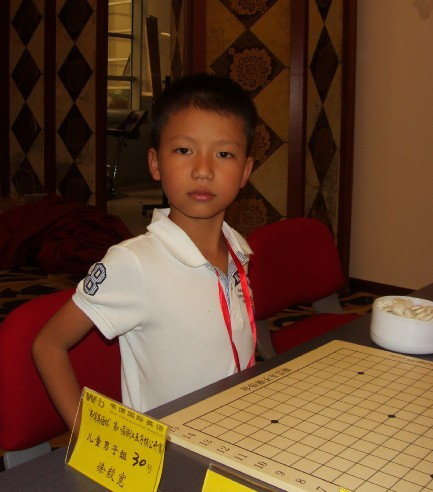
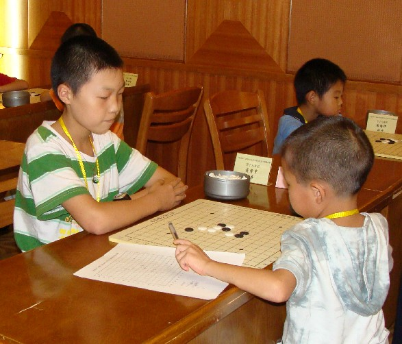

恭喜徐毅宽提前一轮锁定第八届浙江赛儿童男子(D)组冠军
#1 <font color="red">恭喜徐毅宽提前一轮锁定第八届浙江赛儿童男子(D)组冠军</font> 作者：小丸.net 发表时间：2011-8-21 15:42:04
儿童男子组惊现豪华8连胜，不管下轮徐毅宽什么情况，徐毅宽都将获得第八届浙江赛儿童男子(D)冠军，在此我们恭喜他！我们再次希望他创造九连胜！
#2 Re:恭喜徐毅宽提前一轮锁定第八届浙江赛儿童男子(D)组冠军 作者：锐 发表时间：2011-8-21 15:43:35
 这孩子真帅
这孩子真帅
#3 Re:恭喜徐毅宽提前一轮锁定第八届浙江赛儿童男子(D)组冠军 作者：锐 发表时间：2011-8-21 15:44:38
真的长得好帅
#4 Re:恭喜徐毅宽提前一轮锁定第八届浙江赛儿童男子(D)组冠军 作者：dyccj 发表时间：2011-8-21 16:07:37

#5 Re:恭喜徐毅宽提前一轮锁定第八届浙江赛儿童男子(D)组冠军 作者：岑小鱼 发表时间：2011-8-21 16:11:19
英雄出少年...#6 Re:恭喜徐毅宽提前一轮锁定第八届浙江赛儿童男子(D)组冠军 作者：萱萱 发表时间：2011-8-21 16:29:38
 想当初他还经常教我下棋，那时还不相信他是个孩字，后面视频了才知道，好棒哦，萱姨真以你为荣！
想当初他还经常教我下棋，那时还不相信他是个孩字，后面视频了才知道，好棒哦，萱姨真以你为荣！［此帖子已被 萱萱 在 2011-8-21 16:33:08 编辑过］
#7 Re:恭喜徐毅宽提前一轮锁定第八届浙江赛儿童男子(D)组冠军 作者：以和为贵 发表时间：2011-8-21 16:30:56
小荷才露尖尖角#8 Re:恭喜徐毅宽提前一轮锁定第八届浙江赛儿童男子(D)组冠军 作者：棋心愉悦飘雪 发表时间：2011-8-21 16:35:31
恭喜#9 Re:恭喜徐毅宽提前一轮锁定第八届浙江赛儿童男子(D)组冠军 作者：黑白之巅 发表时间：2011-8-21 18:09:20
初露锋芒，光芒四射
#10 Re:恭喜徐毅宽提前一轮锁定第八届浙江赛儿童男子(D)组冠军 作者：连心 发表时间：2011-8-21 18:13:43
真霸气。。
#11 Re:恭喜徐毅宽提前一轮锁定第八届浙江赛儿童男子(D)组冠军 作者：傀儡 发表时间：2011-8-21 20:38:02
期待九连胜~~~~~~
#12 Re:恭喜徐毅宽提前一轮锁定第八届浙江赛儿童男子(D)组冠军 作者：黄药师 发表时间：2011-8-21 20:42:31

2009年的照片，变化还是蛮大的！
当时对蒋哲宇！
#13 Re:恭喜徐毅宽提前一轮锁定第八届浙江赛儿童男子(D)组冠军 作者：小帮帮 发表时间：2011-8-21 21:11:15
多大啊？
#14 Re:恭喜徐毅宽提前一轮锁定第八届浙江赛儿童男子(D)组冠军 作者：五连达人 发表时间：2011-8-21 21:14:31
瑞星定式都懂啊。。
#15 Re:恭喜徐毅宽提前一轮锁定第八届浙江赛儿童男子(D)组冠军 作者：满天星 发表时间：2011-8-21 21:14:45
小帅G 挺喜欢的
``
``
#16 Re:恭喜徐毅宽提前一轮锁定第八届浙江赛儿童男子(D)组冠军 作者：掌棋宣传员 发表时间：2011-8-21 22:11:33
#17 Re:恭喜徐毅宽提前一轮锁定第八届浙江赛儿童男子(D)组冠军 作者：忧郁的双眼 发表时间：2011-8-21 22:17:25
真霸气！！！！#18 Re:Re:恭喜徐毅宽提前一轮锁定第八届浙江赛儿童男子(D)组冠军 作者：萱萱 发表时间：2011-8-21 23:13:20
引用：
原文由 小帮帮 发表于 2011-8-21 21:11:15 :多大啊？
好像是8岁到9岁的样子吧
#19 Re:恭喜徐毅宽提前一轮锁定第八届浙江赛儿童男子(D)组冠军 作者：掌棋如烟 发表时间：2011-8-22 10:33:24
#20 Re:恭喜徐毅宽提前一轮锁定第八届浙江赛儿童男子(D)组冠军 作者：五子酷 发表时间：2011-8-22 16:31:33
比较强大的孩子都去参加成人组了，9连胜并不稀奇。
#21 Re:恭喜徐毅宽提前一轮锁定第八届浙江赛儿童男子(D)组冠军 作者：屏蔽 发表时间：2011-8-22 16:57:32
我经过深入地研究和对比发现，这孩子在2009年8月学棋2个月，在2011年8月学棋5个月……［ 锐 于 2011-8-24 18:25:09 时花20金币送鲜花一朵］
#22 Re:恭喜徐毅宽提前一轮锁定第八届浙江赛儿童男子(D)组冠军 作者：海湾浪琴 发表时间：2011-8-22 16:59:01
许毅宽
#23 Re:恭喜徐毅宽提前一轮锁定第八届浙江赛儿童男子(D)组冠军 作者：五子酷 发表时间：2011-8-22 17:04:13
楼上小家伙，你要参加D组，冠军就你的了！
#24 Re:Re:恭喜徐毅宽提前一轮锁定第八届浙江赛儿童男子(D)组冠军 作者：卢老师 发表时间：2011-8-22 18:11:05
回 李一，我2010年11月回白云小学，2011年2月之后徐毅宽就没学了。楼上戴宇轩可以见证，加上2009年学棋时间还远远不足5个月。
五子棋下得好没什么稀奇，考上清华才了得。李一你是真的厉害。陈霖也厉害。曹东吴镝不是孩子们崇拜的。你们两才是小学生的偶像。
跟帖回复，希望不要让更多的孩子迷路，也希望大家能正确引导小孩。
［ 萱萱 于 2011-8-22 21:19:16 时花20金币送鲜花一朵］
［ 萱萱 于 2011-8-22 21:19:25 时花20金币送鲜花一朵］
［ 小悟空 于 2011-8-23 12:26:59 时花20金币送鲜花一朵］
#25 Re:恭喜徐毅宽提前一轮锁定第八届浙江赛儿童男子(D)组冠军 作者：知易行难 发表时间：2011-8-23 12:03:51
感觉卢老师强调的还是老套的唯升学论。我总以为这社会会慢慢改变的。考上清华北大就很成功么？考不上就失败么？感觉很狭隘呀#26 Re:恭喜徐毅宽提前一轮锁定第八届浙江赛儿童男子(D)组冠军 作者：小悟空 发表时间：2011-8-23 12:46:15
卢老师不仅重视学生的五子棋竞技水平，更注重学生的学业成绩，这样的教练，家长将孩子交给他放心呀。#27 Re:恭喜徐毅宽提前一轮锁定第八届浙江赛儿童男子(D)组冠军 作者：五子酷 发表时间：2011-8-23 12:53:14
看来卢老师肯定是一位教学的老师了，注重升学率也很正常，毕竟让你拿世界冠军和清华大学比较，还是选择清华大学实惠得多。
#28 Re:恭喜徐毅宽提前一轮锁定第八届浙江赛儿童男子(D)组冠军 作者：知易行难 发表时间：2011-8-23 14:15:22
做为一名曾经的学生和现在的家长，我感觉以升学论成败，给孩子和家长带来巨大的压力。这种压力很可能会扭曲了孩子的个性。我认为孩子优秀与否，第一，人品优秀。第二，有良好的性格。第三，有自食其力的觉悟并贯穿在生活中。第四，有求知欲。不管五子棋还是其它，只要是通过刻苦努力得来的冠军，都将是我和孩子崇拜的对象。因为他成功的后面是付出-----大量持续，也许会枯燥的付出。这是毅力的体现。这种冠军背后的精神适用于所有的的孩子。能上清华的孩子如果是在快乐中考上的，他将是我和孩子倾慕学习的对象。反之他就是我和孩子眼中的可怜虫。［ 深海鱼 于 2011-8-23 19:09:55 时花20金币送鲜花一朵］
［ 黄药师 于 2011-8-23 20:06:10 时花20金币送鲜花一朵］
#29 Re:恭喜徐毅宽提前一轮锁定第八届浙江赛儿童男子(D)组冠军 作者：掌棋如烟 发表时间：2011-8-23 14:33:48
你们out了撒,现在清华北大都靠边站了,今年的状元都被香港大学招安了.....#30 Re:恭喜徐毅宽提前一轮锁定第八届浙江赛儿童男子(D)组冠军 作者：卢老师 发表时间：2011-8-23 14:40:51
广东门将区楚良是正牌大学毕业的，现在在国家队任门将教练员。记得10几年前中央电视台报道中国踢足球的文化水平普遍偏低，而赞赏区楚良的优秀，我记忆犹新。
陈霖和李一的优越感不是曹东和吴镝所能比的，这点相信大家都不用在验证了吧。记得我们这的教育局长虽然说过阳光教育（素质教育）但是后面重点说了要以课堂教育为核心。
这次浙江公开赛上的颁奖嘉宾戴老师就是84届浙大毕业的，刚来就被伟鬼老师委以颁奖嘉宾。
作为五子棋爱好者，棋是要下的，但是学习要放第一位。
#31 Re:Re:恭喜徐毅宽提前一轮锁定第八届浙江赛儿童男子(D)组冠军 作者：萱萱 发表时间：2011-8-23 18:49:56
引用：
原文由 卢老师 发表于 2011-8-23 14:40:51 :广东门将区楚良是正牌大学毕业的，现在在国家队任门将教练员。记得10几年前中央电视台报道中国踢足球的文化水平普遍偏低，而赞赏区楚良的优秀，我记忆犹新。
陈霖和李一的优越感不是曹东和吴镝所能比的，这点相信大家都不用在验证了吧。记得我们这的教育局长虽然说过阳光教育（素质教育）但是后面重点说了要以课堂教育为核心。
这次浙江公开赛上的颁奖嘉宾戴老师就是84届浙大毕业的，刚来就被伟鬼老师委以颁奖嘉宾。
作为五子棋爱好者，棋是要下的，但是学习要放第一位。
赞同，在五子棋选手还不能选择把五子棋当职业的今天，我们要先保住饭碗，再来谈兴趣。
而且相信不管是围棋，象棋，还是五子棋，先辈们发明它们的初崇不是为了饭碗，只是丰富我们的生活。